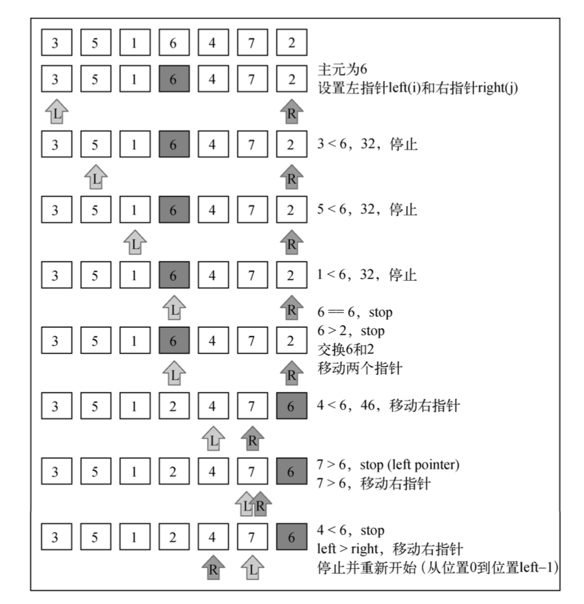

快速排序，又称划分交换排序。以分治法为策略实现的快速排序算法。
本文主要要谈的是利用javascript实现in-place思想的快速排序
分治法：
在计算机科学中，分治法是建基于多项分支递归的一种很重要的算法范式。字面上的解释是“分而治之”，就是把一个复杂的问题分成两个或更多的相同或相似的子问题，
直到最后子问题可以简单的直接求解，原问题的解即子问题的解的合并。（摘自维基百科）
快速排序的思想
数组中指定一个元素作为标尺，比它大的放到该元素后面，比它小的放到该元素前面，如此重复直至全部正序排列。
快速排序分三步：
选基准：在数据结构中选择一个元素作为基准(pivot)
划分区：参照基准元素值的大小，划分无序区，所有小于基准元素的数据放入一个区间，所有大于基准元素的数据放入另一区间，分区操作结束后，基准元素所处的位置就是最终排序后它应该所处的位置
递归：对初次划分出来的两个无序区间，递归调用第 1步和第
2步的算法，直到所有无序区间都只剩下一个元素为止。
